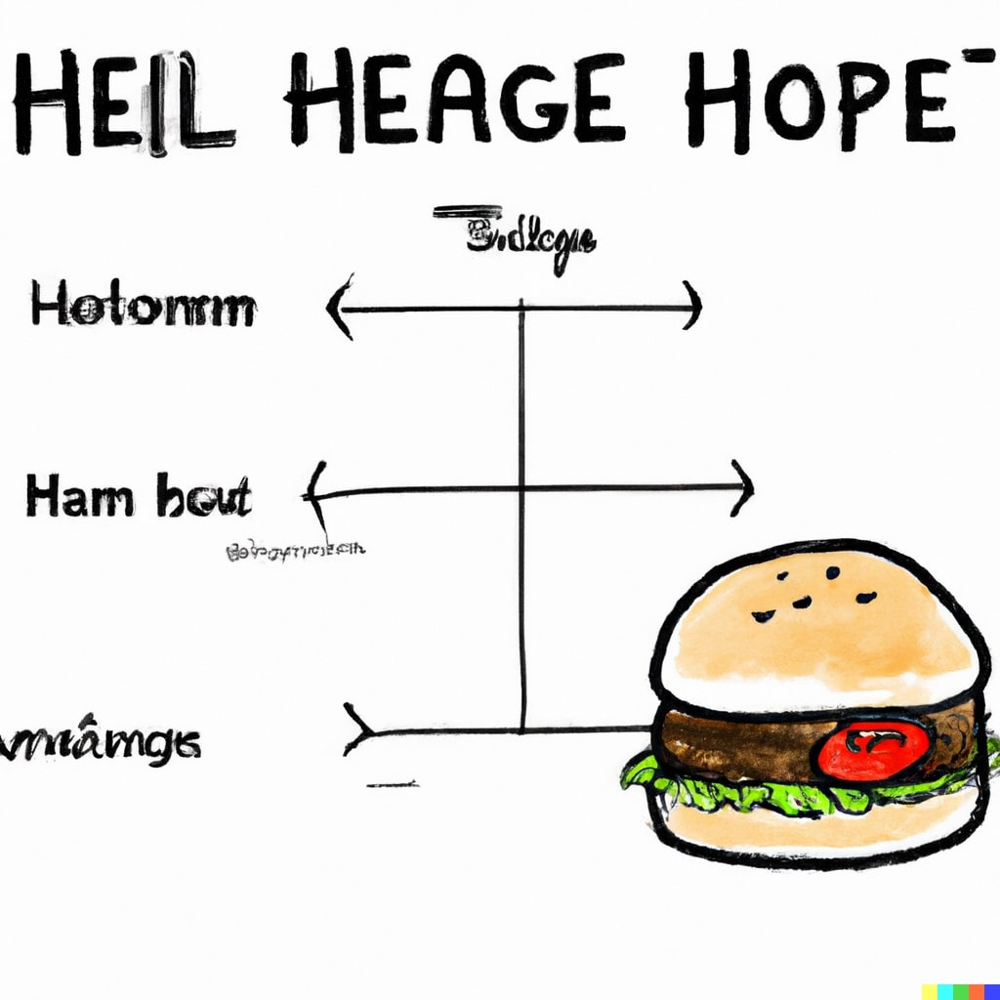

Hamburger

Ingredients
- Ground beef
- Hamburger buns
- Lettuce
- Tomato
- Onion
- Cheese slices
- Ketchup
- Mustard
- Pickles
- Salt and pepper (for seasoning)
Steps
- Gather Ingredients: Ground beef, hamburger buns, lettuce, tomato, onion, cheese, ketchup, mustard, and pickles.
- Prepare the Patties: Shape the ground beef into patties, about half an inch thick.
- Season Patties: Season both sides of the patties with salt and pepper.
- Cook Patties: Grill or pan-fry the patties over medium heat for about 4 minutes on each side for medium doneness.
- Toast Buns: Lightly toast the hamburger buns on the grill or in a pan.
- Assemble the Burger: Place a patty on the bottom bun. Add cheese, lettuce, tomato, onion, pickles, ketchup, and mustard.
- Top with Bun: Place the top bun over the assembled ingredients.
- Serve: Serve the hamburger immediately while it's hot and enjoy!